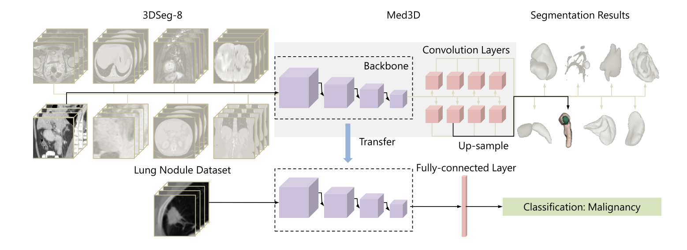
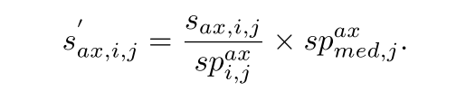
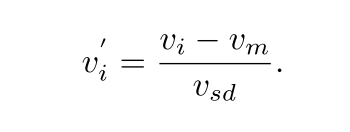
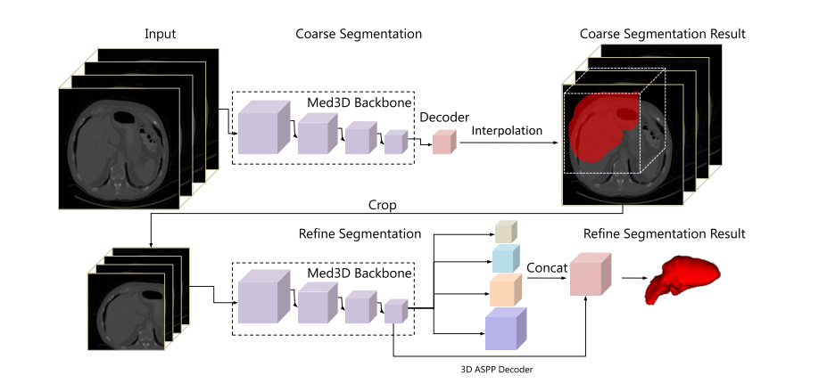
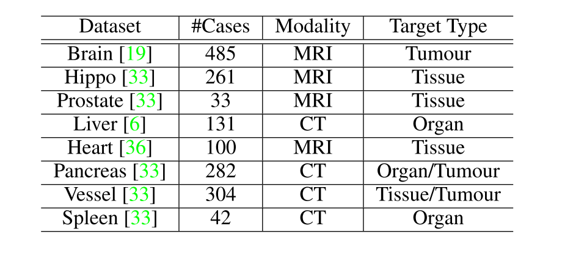
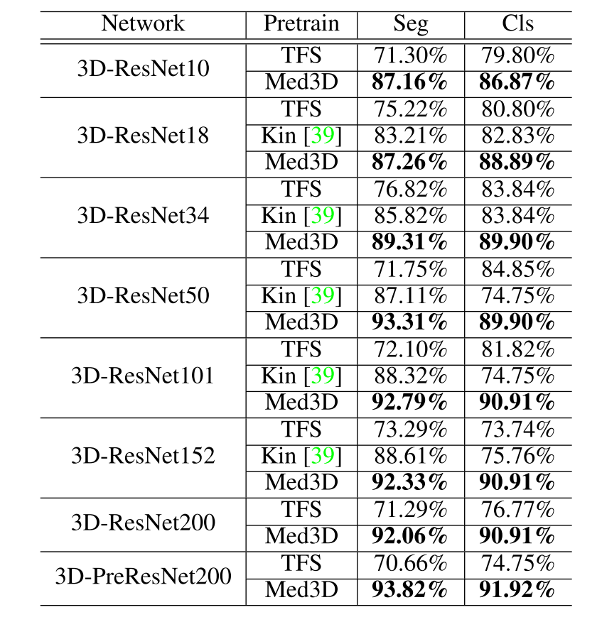
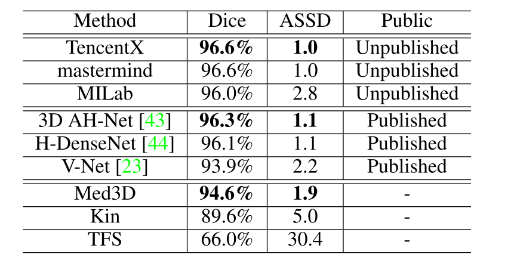

- arXiv: 1904.00625
- arXiv: https://arxiv.org/abs/1904.00625
- code: https://github.com/cshwhale/Med3D
Motivation
- In the medical imaging domain, it is extremely challenging to build a sufficiently large 3D dataset due to the intrusive nature of some medical imaging modalities (e.g. CT), the prolonged imaging duration as well as the laborious annotation in 3D.
- To avoid the inferior performance caused by training networks from scratch using a small set of data, some studies converted 3D volume data to 2D and leveraged the pre-trained 2D models from ImageNet. Although this solution gains better performance than training from scratch, there still a big gap due to the abandoned 3D spatial information.
Contributions
- Propose a heterogeneous Med3D network aiming for 3D multi-domain medical data, which can extract general 3D features even in the case of large differences of data domain distribution.
- Transfer backbone of the Med3D model to three new 3D medical image tasks. And results confirmed the effectiveness and efficiency of Med3D with extensive experiments.
- To facilitate the community to reproduce our experimental results and apply Med3D to other applications, author will release Med3D pre-trained models and relative source code.
Methods
- The motivation of this work is to train a high performance DCNN model with a relatively large 3D medical dataset, that can be used as the backbone pre-trained model to boost other tasks with insufficient training data.

Fig1: Framework of the proposed method.
- In the first step, we collect several publicly available 3D segmentation datasets called 3DSeg-8 from different medical imaging modalities, e.g. magnetic resonance imaging (MRI) and computed tomography (CT), with various scan regions, target organs and pathologies. We then normalize all the data with the same spatial and intensity distributions;
- In the second step, we train a DCNN model, namely Med3D, to learn the features. The network has a shared encoder and eight simple decoder branches for each specific dataset;
- In the last step, the extracted features from the pre-trained Med3D model are transferred to other medical tasks to boost the network performance.
Data Selection and Normalization
- To avoid over interpolation, we interpolate each volume to the median spacing according to the respective domain so as to keep the spatial characters of target in each domain. In domain j, the spacings from each axis of x, y and z in the i-th image can be defined as sp_{i, j}^{ax} where ax belongs to x, y, z. The median spacings of the j-th domain data is calculated as:
where f_{med} denotes the median operation and N_j presents the number of data in j-th domain. And the new image size s{i, j}^{ax} can be calculated from size in original image s{ax, i, j} as below:

- To eliminate the side-effect of pixel value outliers, especially for the CT modality (eg. metal in CT), we sort all the pixel values in each image and truncate the intensities to the range of 0.5 to 99.5 percentiles. Due to the different intensity range from various domains, we further normalize intensity value v_i to v_{i}^{‘} using the mean v_m and standard deviation v_sd in an individual volume as:

Med3D Network
In the design of Med3D network, we leverage the existing feature extraction architecture of the mature networks and focus on exploring the optimal way to train Med3D with our unique 3DSeg-8 data.
- we connect the encoder with eight specific decoder branches, where each one of them corresponds to one particular dataset of 3DSeg-8. At the training stage, each decoder branch only processes the feature map extracted from the corresponding dataset and the rest branches do not participate in its optimization process.
- To compute the differences between the network output and the ground truth annotation, we directly up-sample the feature map from the decoder to the original image size. Such simple decoder design allows the network to focus on training a universal encoder. At the test stage, the decoder part is removed and the remained encoder can be transferred to other tasks.
Transfer Learning
The goal is to establish a general 3D backbone network that can be transferred to other medical tasks to gain better performance than training from scratch. To validate the effectiveness and versatility of the established Med3D network, we conduct three different and thorough experiments in segmentation and classification domains.
Lung Segmentation. We transfer encoder part from Med3D as the feature extraction part and then segmented lung in whole body followed by three groups of 3D decoder layers. The first set of decoder layers is composed of a transposed convolution layer with a kernel size of (3, 3, 3) and a channel number of 256 (which is used to amplify twice the feature map), and the convolutional layer with (3, 3, 3) kernel size and 128 channels. The remaining two groups of decoder layers are similar to the first group except doubling the number of channels per layer of network progressively. Finally, the convolution layer in the (1, 1, 1) kernel is employed to generate the final output and the number of channels corresponds to the number of categories.
Pulmonary Nodule Classification. We transfer the encoder part of Med3D to the nodule classifier as a feature extractor, and the average pooling operation and fully-connected layer with (1, 1, 1) kernel size is added to classify the results.
LiTS Challenge. We employ the two-stage segmentation network to segmenting liver.
- Firstly, we roughly segment liver in the whole image to obtain the region of interest (ROI) of the target. In this stage, we transfer the backbone pre-trained from Med3D as the encoder part, followed by a convolution layer with (1, 1, 1) kernel and the number of channels is two (liver vs. background). After resizing image, we input the image to coarse-segmentation network for extracting features with 32 times downsampling. Then, we upsample the feature map to the original image size by a bi-linear interpolation method.
- Secondly, we crop the liver target area according to the result from first stage and sub-segment the target again so as to obtain the final liver segmentation result. This stage is mainly focused on careful liver contour segmentation. In order to obtain more dense scale information in the feature map and obtain a larger receptive field, we embed the backbone pre-trained from Med3D into the state-the-of-art DenseASPP segmentation network. This network connects a set of atrous convolutional layers in a dense way which generates multi-scale features that not only cover a larger scale range, but also cover that scale range densely without significantly increasing the model size. And, we replace all the 2D kernels with the corresponding 3D version. Since there is inevitably bias between ground truth and liver target prediction in the result from the first step, in order to increase robustness of the fine-segmentation model, we perform a random expansion liver target area and then process it with two augmentation methods including rotation and translation.

Fig2: Framework of the liver segmentation.
Experiments and Results
First, we show detailed settings of the experiments and some comparison results with different dataset settings. Next, we transfer the pre-trained Med3D encoder to initialize networks of other medical tasks and compare the results with training-from- scratch networks and pre-trained networks with Kinetics data. Finally, we concatenate the pre-trained Med3D encoder with DenseASPP network and demonstrate the state-of-the-art performance on the liver segmentation task using a single model.
- 3DSeg-8 dataset. 3DSeg-8 is an aggregate dataset from eight public medical datasets. It covers different organs/tissues of interest with either CT or MR scans, as shown in Table 1.
Table 1: Details of 3DSeg-8 where “Tumors” and “Tissue” represent segmentation of lesions and components in an organ (“Organ”).

Network archietecture. We adopt the ResNet family (layers with 10, 18, 34, 50, 101, 152, and 200) and pre-activation ResNet-200 [30] architecture as the backbone of Med3D networks. To enable the network to train with 3D medical data, we modify the backbone network as follows: 1) we change the channel number of the first convolution layer from 3 to 1 due to the single channel volume input; 2) we replace all 2D convolution kernels with the 3D version; 3) we set the stride of the convolution kernels in blocks 3 and 4 equal to 1 to avoid down-sampling the feature maps, and we use dilated convolutional layers with rate r = 2 as suggested in [37] for the following layers for the same purpose; and 4) we replace the fully connected layer with a 8-branch decoder, where each branch consists of a 1x1x1 convolutional kernel and a corresponding up-sampling layer that scale the network output up to the original dimension.
Transfer learning experiments. We select Visceral dataset as it includes abundant lung segmentation annotations for the data in 4 different modalities. There are 80 volumes in total. We pick 72 volumes for training and 8 volumes for testing. Both training and testing data contains 4 modalities. During training, we use same segmentation architectures (ResNet family) for all comparison candidates. The major difference comes from the way how we initialize the segmentation network, using pre-trained Med3D, pre-trained Kin or TFS. When training with pre-trained models, we optimize the model parameters with Adam [41] starting from the 0.001 learning rate, while the learning rate of TFS is set to 0.01.
Pulmonary nodule classification task. LIDC dataset collected thoracic CT scans from 1,010 patients and nodules of each CT scan were annotated by four radiologists. The malignance of the nodules was defined in five levels, from benign to malignant according to the rules of LIDC-IDRI. We merge ‘1‘, ‘2‘, ‘3‘ as benign and ‘4‘, ‘5‘ as malignancy for reducing subjective uncertainty. The goal of this task is to compare the network performance of using different initialization methods. We change the backbone network to a classification architecture by attaching full connected layers to the encoder. We use 1,050 nodules for training and 99 nodules for testing. The optimization parameters are consistent with the previous task.
Table 2: Results of transfer Med3D to lung segmentation (Seg) and pulmonary nodule classification (Cls) with Dice and accuracy evaluation metrics, respectively.

LiTS challenge. It makes us wonder if the Med3D can further boost the network performance on challenging tasks, such as LiTS challenge, where 3D networks trained from scratch usually have worse performance than 2D or 2.5D approaches using pre-trained models on natural images.
- The LiTS challenge dataset has totally 201 enhanced abdominal CT scans, which is further split to a training set with 131 scans and a test set with 70 scans. Only training data annotations are given to the public and the test ones are kept private with the host. The task is to segment the liver and liver tumors. It is known as a challenging task for two reasons. First, the number of training data is small. Second, the data is collected from different clinical sites with different scanners and protocols, causing large variations of the data quality, appearance and spacing.
- We set up the same segmentation network with ResNet-152 backbone and initialize it with the pre-trained Med3D. During training, we normalize all data with the average spacing value of the training data as some volumes do not give spacing information. We also normalize the intensity with a window width from -200 to 250 Hounsfield Unit. All the training hyper-parameters are same as the previous segmentation experiments.
Table 3: LiTS challenge results.

Conclusion
In this work, we build a large-scale 3D medical dataset 3DSeg-8 and propose a novel framework to train Med3D networks with such data. The extracted features from Med3D networks are demonstrated to be effective and generalized, and can be used as the pre-trained features for other tasks with small training datasets. Compared with networks trained with natural videos or trained from scratch, the Med3D networks achieve superior results. We will release all pre-trained Med3D models as well as the related code. In the future, we will continue to collect more 3D medical data to further improve the Med3D pre-trained models.